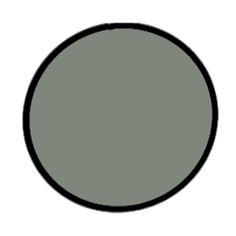
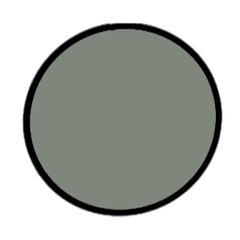

Creative Reflection
I decided to import a font I found online, 'Lemon Tuesday' which I used throughout my website for headings and important text. I then used an already imported text as my secondary font. I did not want to use Lemon Tuesday throughout my blog (add image) as it can be difficult to read especially when printed too small and I did not want to overwhelm my user with large sections of text.
I liked the idea of adding pixel art consistently throughout my website as I thought it made my website more visually appealing. The increased visual appeal helped because the purpose of my portfolio website was to show off my skills as a developer as opposed to an artist. Therefore I found, pages were not as attractive as they could be if they were filled with my art. I considered using pixel art to design more detailed icons for my navigation bar as the lack of text requires less ambiguous icons. However, I did enjoy the sleek designs of the icons I got from font awesome.
On my app development page where I speak about the internship I am currently doing at 'Firtech', a software development/automation company. I decided to use two carousels side by side and tried to align the pages I had designed using Miro with the pages I had built in visual studio. I did this because I wanted recruiters to be able to see how each page had developed from my planning process to the current outcome (as I am still improving the pages). This was quite challenging as during the development process, pages had been moved, deleted and/or added which made it difficult to compare pages exactly. This is also why I decided to use back and forward buttons instead of two automatic carousels so the user can skip extra pages if they would like to see the exact page in planning versus in development.
I decided to only use two primary fonts as I wanted my website to contain some form of consistency. This is also why I used similar saturation in colours and my main colours only consisted of red, blue and purple. I chose the background to be a screenshot of my code because I thought it would be fitting on the first page. That way recruiters can get an idea of what type of portfolio they are looking at before diving into the main content.
I changed the background colour of my website from blue to a lighter yellow, so that text on top could be seen more clearly. I also changed the overall colour of the website to a more neutral colour palette, as I thought it looked more professional, in comparison to the more saturated blues and greens I had used before. I also wanted to have a more high contrast web page to improve accessibility for those with colour blindness/ visual disbilties. I placed the blog posts on separate pages to make it easier for viewers to quickly shift through reflections they are most interested in.
 
